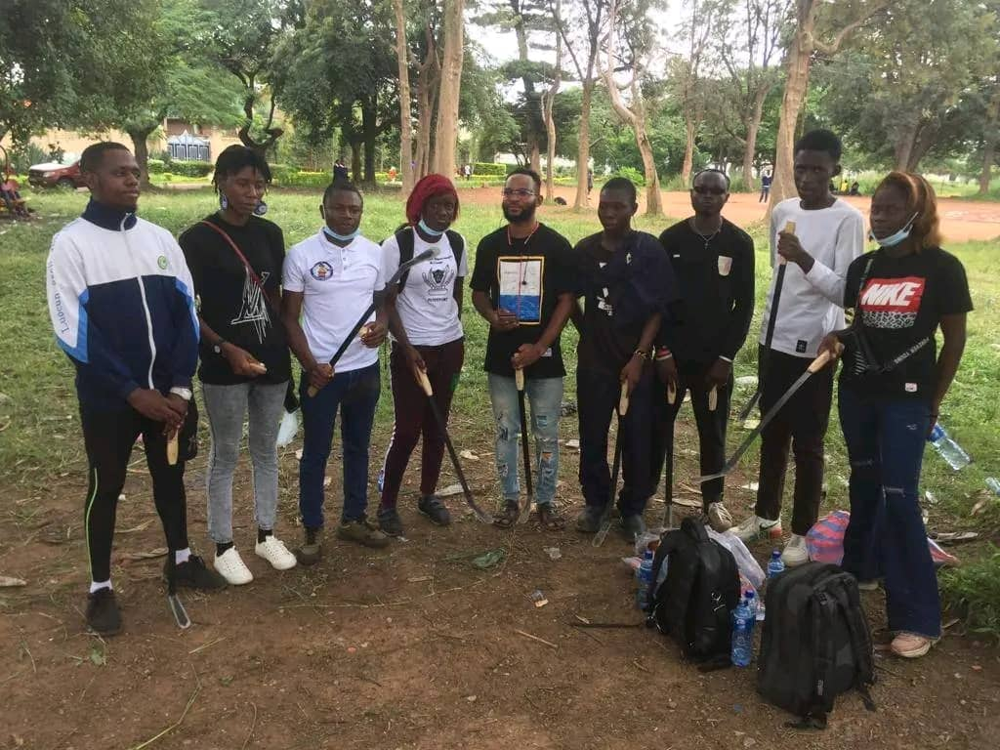
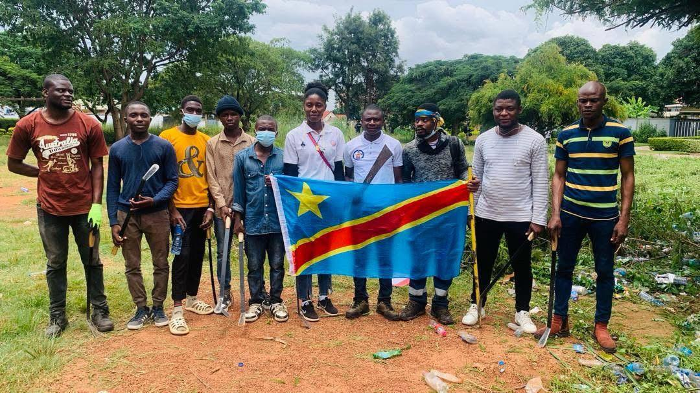

Construire un avenir durable à travers l’agriculture, l’autonomie alimentaire et la formation des communautés rurales.
La F.J.E.R.E. s’engage dans la promotion de l’agriculture comme moteur essentiel du développement économique et social. Nous croyons que chaque terre peut devenir une source de richesse si elle est bien exploitée et valorisée.
À travers nos actions, nous encourageons les jeunes, les familles et les communautés à s’approprier les pratiques agricoles modernes afin de renforcer leur autonomie et réduire la dépendance alimentaire.

Nous lançons un appel fort à la jeunesse pour s’orienter vers l’agriculture comme une véritable opportunité de réussite et de création de richesse.

L’agriculture représente pour la F.J.E.R.E. une base solide pour construire une société forte, indépendante et prospère. Nous croyons à une génération capable de nourrir sa communauté et de transformer son environnement.
Rejoindre l’initiative agricole de la F.J.E.R.E., c’est participer activement à la transformation de nos communautés par la production locale, la formation et l’autonomisation.
S’engager maintenant